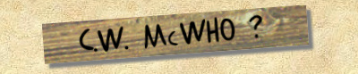
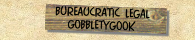

16.7 Million Color Screens
and, you'll need
Vineta BT, MerchantileScript FH
And Times New Roman Fonts
|
Well folks, this is it! The World Wide Web's second site celebratin' the work of C. W. McCall. It's been in the makin' since before there was a WWW, and it's been quite a journey gettin' here. Twenty five years, and more than a few thousand miles, but it's been worth it.
The whole story is here. The story of how this site came to be, and the story of C.W. McCall, least wise, as well as we can piece it together. It's the story of a man who went west, and found his dream. The story of a man who made the dream a reality, and then shared it with all who had eyes to see… and ears to hear. And these pages are one of our dreams. We call 'em "Tales Of The Four Wheel Cowboy." They are our tribute to the man who's words and music led us not only down that old SuperSlab, but to what is surely one of the most beautiful places on earth as well. As you read the pages here, you may come to understand somethin' more about why the 4x4 pages came to be, as well. Because they are as much a tribute to C. W. McCall, as these pages are. They are our Odyssey… Our means to share the beauty of the mountains with all of you. Anyway, you found us, so ease back, stretch that clicker finger a time or two, and enjoy what we've put together for ya. |
|
Visit Amazon to purchase your own copy of C.W. McCall's hit album "The Best Of CW McCall" |
Visit Amazon to purchase your own copy of C.W. McCall's hit album "CW McCall's Greatest Hits" |



|
If you enjoy the 4-Wheel Cowboy website consider making a donation to cover the costs of sharing this material
Thank You! |
This Web page is hosted by: Mark L. Evans
Written and maintained by: Miles A. Lumbard
Send Comments to:Miles A. Lumbard